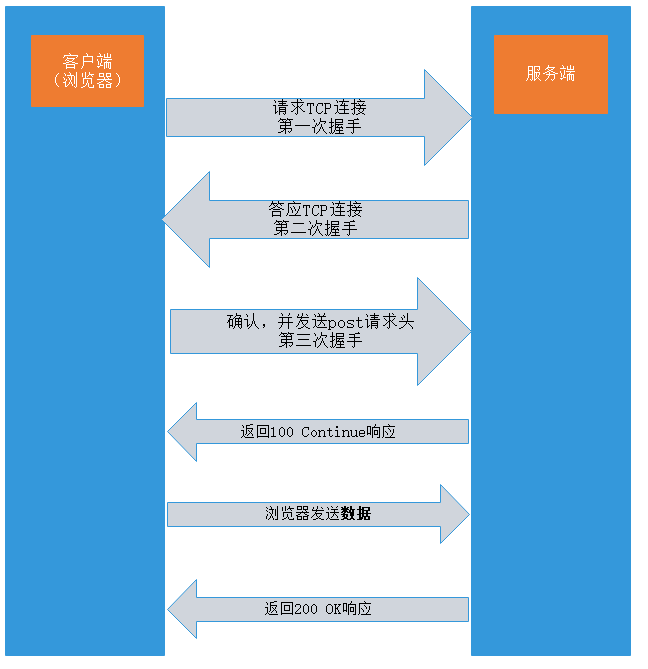

POST和GET的部分知识

来自之前cnblog的博客
源地址：https://www.cnblogs.com/This-is-Y/p/12244175.html
POST和GET的使用场景
1.请求中包含数据更新等副作用时
2.发送敏感信息时(防止Referer等安全隐患)
3.发送的信息量很多时(URL长度有限，但是http协议并未规定get和post的长度限制，长度限制来源与浏览器与web服务器，而不同的浏览器和web服务器，限制的最大长度不一样)
(副作用是指除了获取资源(内容)以外的其他作用,比如追加，更新，删除服务器段数据，购买商品，注册/删除用户等操作，换言之，更新类的页面必须使用POST方法)
当发送的请求有上述其中一条以上时，应该使用POST
POST和GET方法的优缺点：
这里先放一篇写的很不错的博客链接：https://blog.csdn.net/qq_28483283/article/details/80207674
以及知乎一篇关于POST和GET的帖子：https://zhuanlan.zhihu.com/p/73475134
简单总结一下：
- POST更安全（安全只是相对的，对于稍微会一点技术的人来说，拿bp或wireshark就可以看到POST传的数据，甚至还拍好了版。要更加安全还得https）
- GET更快
- POST可传递数据更多(GET因为浏览器等对URL的限制，传输数据大小有限)
- POST能发送更多的数据类型（GET只能发送ASCII字符）
- POST一般用于写入和修改数据，GET一般用于筛选和排序(如淘宝，支付宝的搜索查询都是get提交)，目的是资源的获取，读取数据
POST为什么比GET慢。
- 先看POST和GET的请求详细过程
GET：

POST：

可以看到，POST在发送请求头给服务端，且得到服务端的确认后，才会发送请求数据。而GET直接在发送请求头的时候就把数据发送过去了
- POST因为需要在请求的body部分增加数据，所以会多了几个数据描述部分的首部字段（如：content-type）。但是这个影响比较小，影响速度的原因主要还是第一个。
- GET有缓存，POST没有缓存。在Chrome和FireFox下，如果检测到GET数据是静态资源，则会缓存，如果是数据，则不会
- 针对GET有很多优化方案，然而这些在POST身上却不管用。比如管道通信，关于这个在https://blog.csdn.net/qq_28483283/article/details/80207674这个帖子里讲得非常详细，想了解可以看这个。
Comments